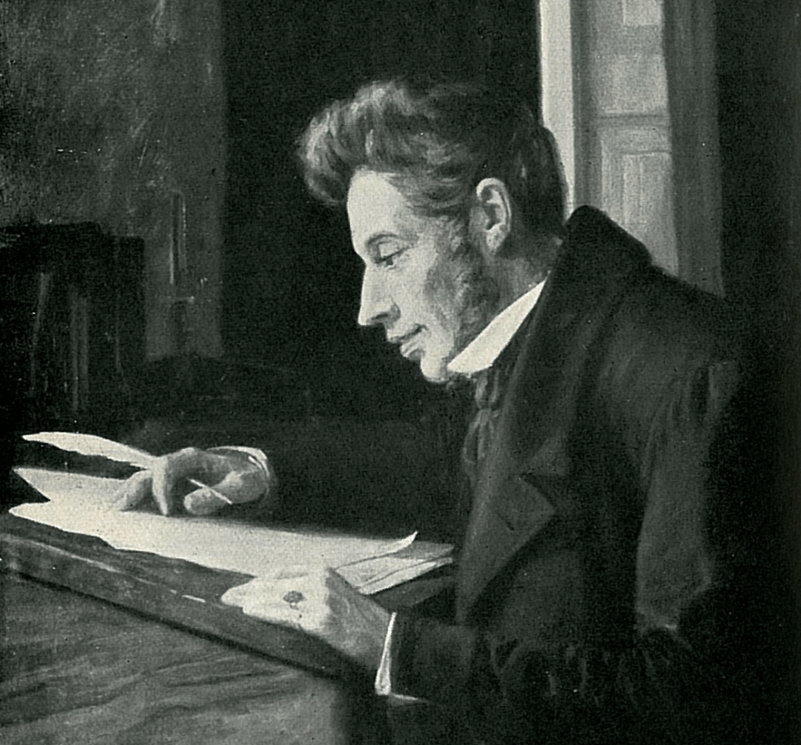

QUAL É O SENTIDO DA VIDA?
Bruno Yuuki Hayashi
EXISTENCIALISMO
A filosofia
A filosofia existencialista, indica que o ser humano não possui um sentido de vida. Ele sim, o buscaria ao longo do tempo, isso pode se dar pelas suas vivências, ideologias. Logo, ao longo do tempo, as pessoas buscam dar sentido as coisas, mesmo elas não tendo um sentido, o conceito filosófico para isso, chama-se: absurdo.
Jean Paul Sartre
Jean Paul Sartre, foi um grande pensador dessa corrente filosófica, em uma de suas obras cita: “a existência precede a essência”, em outras palavras, o homem primeiro nasce para depois desenvolver um significado para sua existência. Conclui que o ser humano está condenado a ser livre, visto que não escolheu nascer, e sua vida gira em torno das suas escolhas. Logo, está a mercê da sua liberdade de "escolher o que fazer", e não pode "não escolher nada", até porque isso é uma optação.
Søren Kierkegaard

Voltando para a idéia do absurdo, essa, dar sentido as coisas em mundo sem sentido, Kierkegaard apresenta uma solução voltada para o âmbito religioso, conhecido também como "existencialismo religioso". No caso, o filósofo acredita que a melhor forma de encarar a filosofia do absurdo, seria "mergulhar de cabeça na religião", em uma relação puramente de fé. Nomeou essa 'solução' de "o salto da fé"